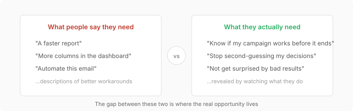
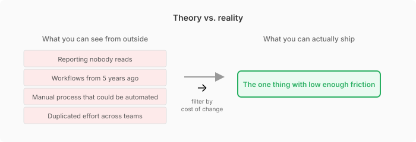

Building the Right Thing Is Hard
I’m working more closely with business teams this year. The failure mode I keep hitting is building something that addresses the symptom someone described in a meeting rather than the actual problem underneath. So I went looking for better frameworks, and one concept in particular gave me language for what “solve the real problem” actually requires.
Needfinding: watch, don’t ask
People cannot tell you what they truly need. They’ve adapted to their problems, built workarounds, stopped noticing the pain. So if you just ask them what they want, you’ll get a description of a slightly better workaround.
Needfinding says skip the interview for this reason. Go watch what they actually do instead. The mismatch between what people say and what they do is where the real problems are hiding.

PalmPilot is the classic example. Late 90s, every competitor was cramming desktop features into a small screen. Palm’s team watched people and realized nobody wanted a tiny computer. They wanted something faster than their paper day planner that fit in a pocket. So Palm shipped a device that did four things and turned on instantly. Competitors were solving “how do we shrink a PC?” when the actual problem was “my paper planner is too slow and I forget it at home.”
Therefore the discipline is not jumping to a solution too early. The moment you name a solution, you’ve killed every other option. Stay on the need as long as you can stand it.
What this looks like outside of a textbook
Here’s where I get skeptical of the theory though. My wife works in luxury retail. When she talks about her day I can immediately spot things that could be better. Processes running on muscle memory from five years ago. Reporting that nobody reads but everyone produces. Workflows that exist because one person set them up and left.
From the outside it’s so obvious. But knowing the fix and actually shipping it are completely different things. You can’t walk in and say “I watched how you work and here’s what’s wrong.” People have ownership over how they do their jobs. What looks like an inefficiency from outside might be absorbing complexity that would blow up somewhere else if you removed it. Or it might just be political, someone built that process and they’re still on the team.
The paper doesn’t really address this. It talks about finding needs as if the hard part is intellectual. In practice though, the hard part is organizational. Getting people to accept that their current process has a problem. Getting time allocated to observing instead of just shipping the next thing.

So the version of this I’m actually trying to practice is smaller than the theory suggests. Watch, notice, and then pick one thing where the cost of change is low enough that people will let you do it. Not the ten things you can see from the outside.
Applying this at work
When a stakeholder says “we need a dashboard that shows X,” that’s a solution, not a need. The need might be “I can’t tell if my campaign is working until two weeks after it ends.” Those lead to very different builds.
So I’m trying to catch myself earlier now. Before scoping anything, spend time watching what people actually do, what workaround they’ve normalized, what would change if the friction disappeared.
References
- Patnaik, D., and Becker, R. (1999). Needfinding: The Why and How of Uncovering People’s Needs. Design Management Journal.